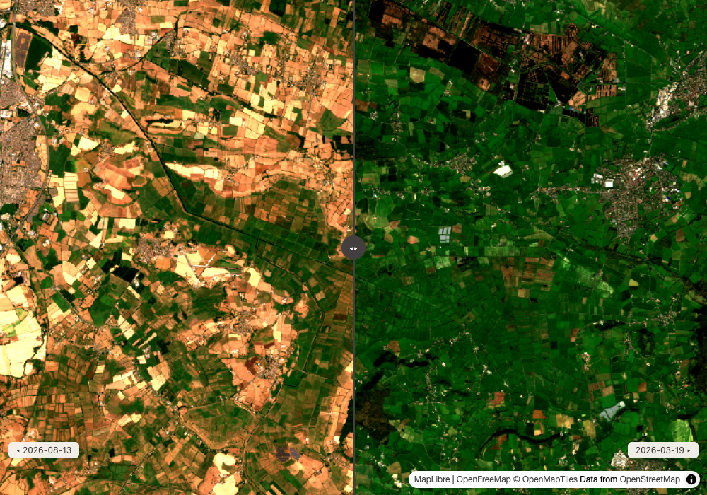
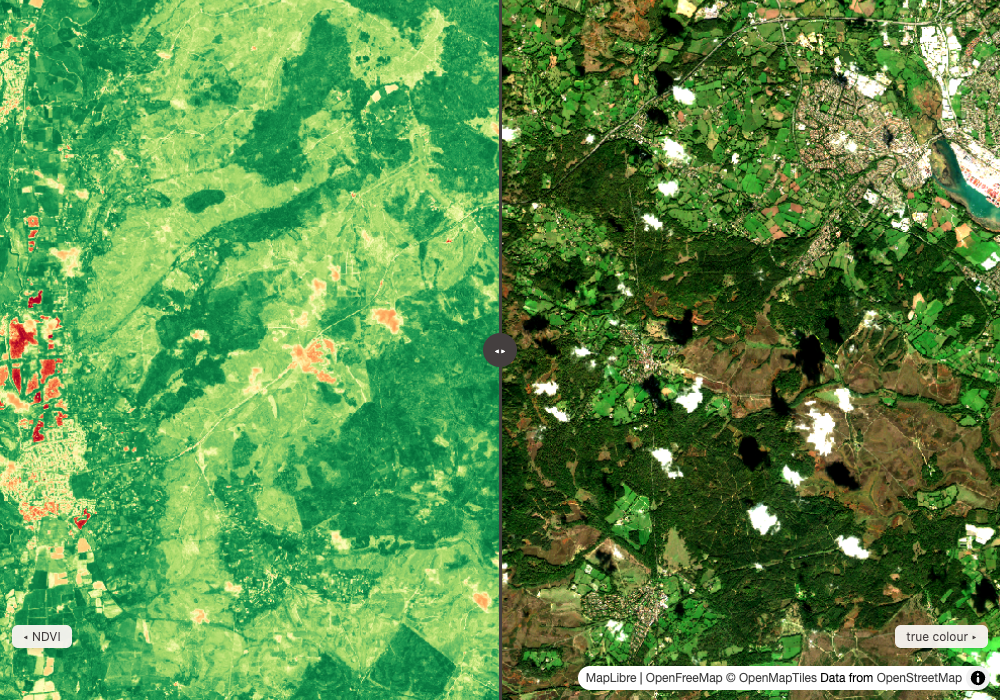
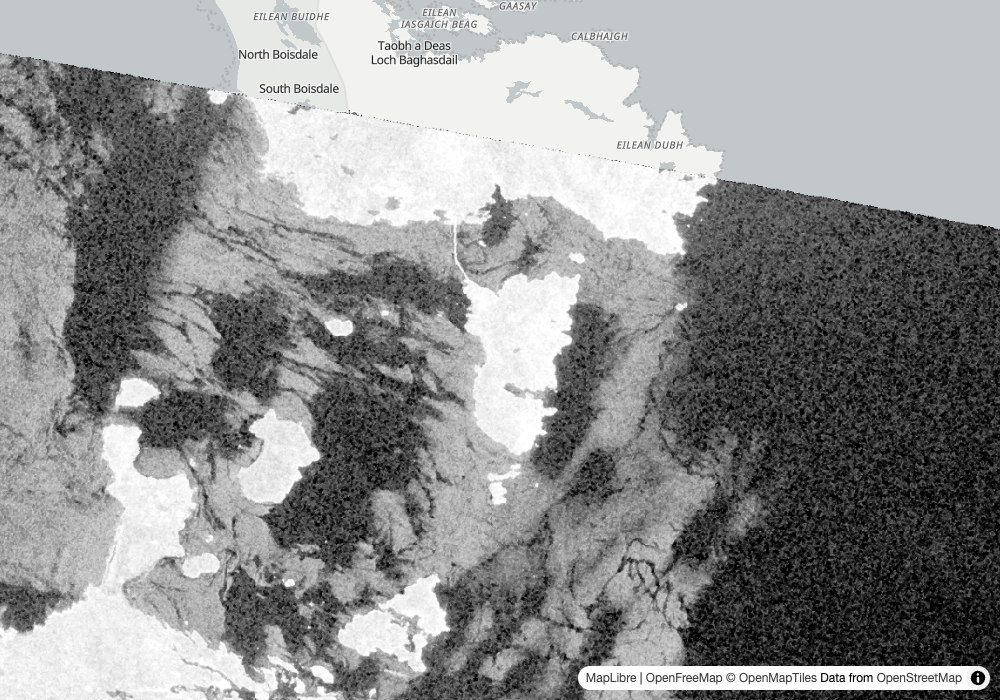
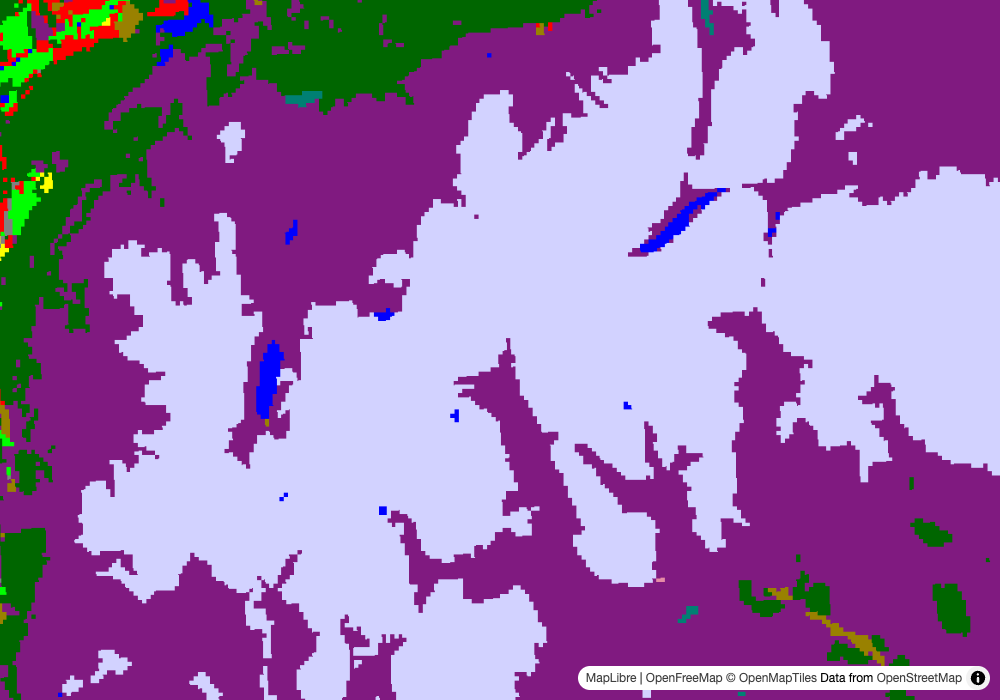
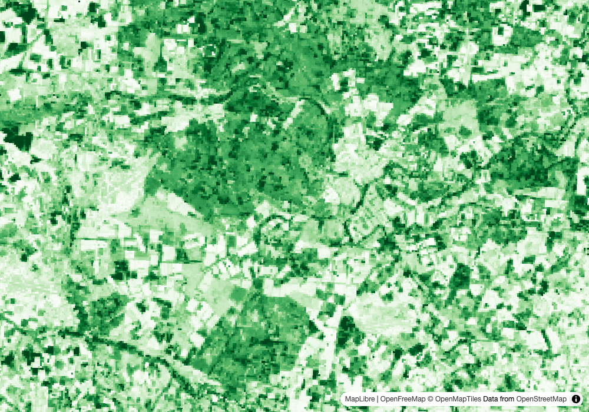

Round 1: 5 UK asks against the new catalog
1
a UK catalog, swiped
Danny
Input
Show me the Somerset Levels this spring and this summer from the UK's own Sentinel-2 data. Is there still floodwater in March?
Our read
No widespread floodwater on 19 March 2026.
Learning → Works.

swipe map: Somerset Levels, 19 March and 13 August 2026 ↗full read
Our read
No widespread floodwater on 19 March 2026. UK EO DataHub's Sentinel-2 ARD (Defra and JNCC) had a 0.0% cloud scene on 2026-03-19 and a 0.01% one on 2026-08-13, both covering the whole box. The water index (NDWI) stays below zero almost everywhere in March: its 98th percentile is -0.30, so open water is a small fraction of the box, not a flooded moor. The Levels were greener in March than in August: median NDVI 0.784 against 0.522, which reads as grass grown in spring, then cut or dried by late summer. The swipe map shows both dates in true colour.show the data
search_imagery("eodh", ["sentinel2_ard"], bbox=[-2.95, 51.05, -2.75, 51.17], datetime_range="2026-01-01/2026-03-31", max_cloud_cover=30)
recommended: neodc.sentinel_ard.data.sentinel_2.2026.03.19.S2C_20260319_latn510lonw0022_T30UWB_ORB037_20260319145859_utm30n_osgb
cloud_cover 0.0 covers_aoi_pct 100.0
reason: clearest (0.0% cloud) and best-covering (100.0% of the area), not a tradeoff
search_imagery("eodh", ["sentinel2_ard"], bbox=[-2.95, 51.05, -2.75, 51.17], datetime_range="2026-06-01/2026-08-31", max_cloud_cover=15)
recommended: neodc.sentinel_ard.data.sentinel_2.2026.08.13.S2C_20260813_latn510lonw0022_T30UWB_ORB137_20260813132151_utm30n_osgb
cloud_cover 0.01 covers_aoi_pct 100.0
reason: clearest (0.0% cloud) and best-covering (100.0% of the area), not a tradeoff; the newest, 2026-08-23, lost on coverage: 45.3% against the pick's 100.0%, outside the 5-point band
compute_statistics(..., 2026-03-19, expression="(nir-red)/(nir+red)")
min -0.2871 max 0.9921 mean 0.7344 median 0.7837 p2 0.2787 p98 0.915 valid 100.0% description "(cog_Red-cog_Red)/(cog_Red+cog_Red)"
compute_statistics(..., 2026-08-13, expression="(nir-red)/(nir+red)")
min -0.1562 max 0.9242 mean 0.5226 median 0.5217 p2 0.1702 p98 0.8517 valid 100.0% description "(cog_Red-cog_Red)/(cog_Red+cog_Red)"
compute_statistics(..., 2026-03-19, expression="(green-nir)/(green+nir)")
min -0.9941 max 0.3898 mean -0.6512 median -0.6832 p2 -0.8034 p98 -0.3008 valid 100.0% description "(cog_NIR_B8-cog_NIR_B8)/(cog_NIR_B8+cog_NIR_B8)"
compute_statistics(..., 2026-08-13, expression="(green-nir)/(green+nir)")
min -0.8748 max 0.28 mean -0.5783 median -0.5873 p2 -0.7736 p98 -0.3251 valid 100.0% description "(cog_NIR_B8-cog_NIR_B8)/(cog_NIR_B8+cog_NIR_B8)"
render_map(..., layers=[2026-03-19, 2026-08-13], compare=True) # no assets passed
tiles: ...&assets=cog|bidx=3,2,1 (true colour picked from the file's own band list)
rescale 41,164: 2nd to 98th percentile of the raw values over the box, widest of 2 scenes
Learning → Works. Two things had to change for this card. EODH's search returns only datetime for each item, so groundstation now asks for the full properties (a fields setting on the catalog's entry) and gets cloud cover back. The cloud filter itself was always applied on EODH's side. And all 10 bands sit in one file, so true colour comes from that file's band list (cog|bidx=3,2,1) without the caller naming bands.
a fourth catalog · cloud cover restored with a STAC fields request · true colour from a packed 10-band file · swipe
2
band math by name
Danny
Input
How green is the New Forest in mid October?
Our read
Still green: median NDVI 0.723 over the box on 17 October 2026 (0.06% cloud, the whole box covered), with the middle 96% of pixels between 0.32 and 0.86.
Learning → Works, with a label to ignore and clouds to look for.

map: New Forest true colour and NDVI, 17 October 2026 ↗full read
Our read
Still green: median NDVI 0.723 over the box on 17 October 2026 (0.06% cloud, the whole box covered), with the middle 96% of pixels between 0.32 and 0.86. The low end is the open heath and the villages, the high end the woodland. One thing to weigh: the scene's 0.06% cloud is a figure for the whole tile, and the map shows a scatter of small cumulus over the forest that come out as orange spots in the NDVI. They are a sliver of the box, so they pull the low tail, not the median. The map swipes true colour against NDVI.show the data
search_imagery("eodh", ["sentinel2_ard"], bbox=[-1.75, 50.80, -1.50, 50.95], datetime_range="2026-08-01/2026-10-21", max_cloud_cover=15)
recommended: neodc.sentinel_ard.data.sentinel_2.2026.10.17.S2B_20261017_latn510lonw0022_T30UWB_ORB137_20261017131842_utm30n_osgb
cloud_cover 0.06 covers_aoi_pct 100.0
reason: clearest (0.1% cloud) and best-covering (100.0% of the area), not a tradeoff
compute_statistics("eodh", "sentinel2_ard", <2026-10-17>, expression="(nir-red)/(nir+red)", bbox=[-1.75, 50.80, -1.50, 50.95])
min -0.2842 max 0.9184 mean 0.6906 median 0.723 p2 0.3226 p98 0.865 valid 100.0% description "(cog_Red-cog_Red)/(cog_Red+cog_Red)"
preview_item(..., expression="(nir-red)/(nir+red)", colormap_name="rdylgn")
...&expression=(b1-b2)/(b1+b2)&assets=cog|bidx=7,3&rescale=-1,1&colormap_name=rdylgn
Learning → Works, with a label to ignore and clouds to look for. The expression names nir and red, which are bands inside one file here, not assets. groundstation reads the item's eo:bands and turns them into band 7 and band 3 of that file. The tiler then labels the result (cog_Red-cog_Red)/(cog_Red+cog_Red). That label is wrong and the number is right: the file names its bands Blue, Green, Red, RE_B5, RE_B6, RE_B7, NIR_B8, and a woodland pixel read directly gives red 49, NIR 320, an NDVI of 0.73.
nir and red resolved inside one 10-band file · NDVI number with its spread · index map
3
radar, and how fresh
Danny
Input
The Sound of Barra on radar, the most recent pass
Our read
The newest radar pass over Barra in this catalog is 13 July 2026, 3.5 months old, while its Sentinel-2 runs to 21 October.
Learning → Partly.

map: Sound of Barra, Sentinel-1 VV backscatter, 13 July 2026 ↗full read
Our read
The newest radar pass over Barra in this catalog is 13 July 2026, 3.5 months old, while its Sentinel-2 runs to 21 October. Radar sees through the Hebridean cloud, and the VV backscatter shows it: median -27.4 dB over the box, water and sand flats dark (the 2nd percentile is -40.2 dB), land and rock brighter (98th percentile -9.7 dB). 80% of the box has data, and the rest falls outside the swath.show the data
search_imagery("eodh", ["sentinel1_ard"], bbox=[-7.45, 57.0, -7.15, 57.15], limit=5)
2026-07-13 covers 100.0 neodc.sentinel_ard.data.sentinel_1.2026.07.13.S1C_20260713_125_desc_064542_064607_VVVH_G0_GB_OSGB_RTCK_SpkRL
2026-07-13 covers 100.0 neodc.sentinel_ard.data.sentinel_1.2026.07.13.S1C_20260713_125_desc_064542_064607_VVVH_G0_NI_TM65_RTCK_SpkRL
2026-07-13 covers 100.0 neodc.sentinel_ard.data.sentinel_1.2026.07.13.S1C_20260713_125_desc_064517_064542_VVVH_G0_GB_OSGB_RTCK_SpkRL
2026-07-11 covers 100.0 neodc.sentinel_ard.data.sentinel_1.2026.07.11.S1C_20260711_103_asc_181503_181528_VVVH_G0_GB_OSGB_RTCK_SpkRL
compute_statistics(..., assets=["data|bidx=1"], bbox=...)
min -51.43 max 7.065 mean -26.32 median -27.39 p2 -40.21 p98 -9.739 valid 79.94% description "data_b1"
Learning → Partly. The scene renders and the numbers are in dB, but 3 things needed a person. Sentinel-1 ARD stops at 2026-07-15 here, so most recent means summer, not this week. Its single data asset lists no bands, so VV had to be picked by index (data|bidx=1), from the item's sar:polarization order. And each pass comes twice, on a GB grid and on an Irish grid, and the search returns both.
Sentinel-1 ARD in dB · band picked by index when no band list exists · catalog freshness gap
4
a class map with its legend
Danny
Input
What covers the Cairngorms around Glenmore and Aviemore?
Our read
Mostly heather: class 9 (Heather) is both the median and the most common value over the box, in EOCIS's 100 m land cover for 2023.
Learning → Works.

map: Cairngorms land cover 2023, UKCEH classes ↗full read
Our read
Mostly heather: class 9 (Heather) is both the median and the most common value over the box, in EOCIS's 100 m land cover for 2023. 10 classes are present, and the middle 96% of pixels run from class 2 (coniferous woodland, the Glenmore and Rothiemurchus forests) to class 12 (inland rock, the high plateau). The map draws each class in the colour the file itself declares, with the legend.show the data
search_imagery("eodh", ["eocis-chuk-geospatial-landcover"], bbox=[-3.9, 57.0, -3.5, 57.15])
recommended: 852e5728-b78f-49dc-9fc1-8e65d8bd6b52
cloud_cover None covers_aoi_pct 100.0
reason: best-covering scene at 100.0% of the area; this collection reports no cloud cover
compute_statistics(..., assets=["data"], bbox=...)
min 1 max 21 mean 9.644 median 9 p2 2 p98 12 valid 100.0% description "data_Land cover"
unique 10
file tags: flag_values "[-1 1 2 ... 21]" flag_meanings "No_data Deciduous_woodland Coniferous_woodland Arable ... Heather Heather_grassland Bog ..."
render_map(..., colormap_name="ukceh-landcover") -> legend "UKCEH Land Cover", 21 classes
Learning → Works. The class names and colours ship in the GeoTIFF's tags, not in STAC, so they went into groundstation's legend list once. The public tiler only knows its own colormap names, so any legend in that list now goes to it as an explicit value-to-colour map. Class -1 is No_data and is left out, so it draws clear.
categorical layer · file's own class colours as a legend · reused legend list
5
a scaled product
Danny
Input
Leaf area index across Breckland and the Suffolk farms, late summer 2024
Our read
A median leaf area index of about 2.0 for the 15 days to 23 August 2024: the raw median is 39 and the collection says to divide by 20.
Learning → Partly.

map: East Anglia leaf area index, August 2024 ↗full read
Our read
A median leaf area index of about 2.0 for the 15 days to 23 August 2024: the raw median is 39 and the collection says to divide by 20. The middle 96% runs from 0.1 to 4.3, which is harvested fields at the low end and Thetford Forest's pines at the high end. The map draws the raw values, which keeps the pattern and needs no scaling.show the data
search_imagery("eodh", ["eocis-chuk-land-vegetation-lai"], bbox=[0.5, 52.3, 0.9, 52.5], datetime_range="2024-06-01/2024-08-31")
2024-08-23 ddc4d6be-7752-46c2-84b8-4029c6353859
2024-08-08 2e4b0ea2-49ac-4d84-bd29-22968e96021e
2024-07-23 d9ca525d-3307-4fbe-91b2-00009a900c1b
recommended: ddc4d6be-7752-46c2-84b8-4029c6353859
cloud_cover None covers_aoi_pct 100.0
reason: best-covering scene at 100.0% of the area; this collection reports no cloud cover
describe_collection("eodh", "eocis-chuk-land-vegetation-lai")
description: "... Gap-filled data are available for 100m spatial resolution at a 15-day temporal resolution. The data must be divided by a scaling factor of 20."
extent.temporal: 2018-04-01 to 2024-12-31
compute_statistics(..., assets=["data"], bbox=...)
min 0 max 129 mean 39.89 median 39 p2 2 p98 86 valid 100.0% description "data_lai_leaf_index"
Learning → Partly. The scale factor is only in the collection's prose, not in raster:bands, so the tool returns raw numbers and the division was done by reading the description. The product also ends in December 2024, so it describes past seasons, not this one.
15-day 100 m vegetation product · scale factor found in prose · honest raw numbers
Reproduce
git clone https://github.com/dannybauman/groundstation && cd groundstation
git switch add-eodh-catalog
bash scripts/doctor.sh # walks the setup chain, prints the fix
uv run evals/unit_checks.py # offline checks
uv run scripts/field_test.py docs/field-test-2026-10-30-no22.cases.json